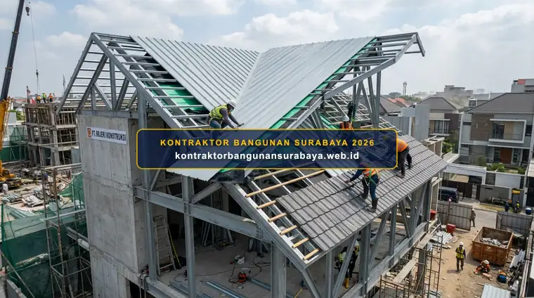

1. Perbandingan Atap Genteng Beton, Metal, dan Spandek untuk Rumah Tinggal
Apa perbedaan atap genteng beton, atap metal, dan atap spandek untuk rumah tinggal?
Atap genteng beton menawarkan daya tahan dan peredam panas yang baik namun lebih berat, atap metal seperti galvalum lebih ringan dan cepat dipasang namun cenderung lebih berisik saat hujan, sementara atap spandek menjadi pilihan ekonomis untuk bangunan dengan bentang sederhana. kontraktorbangunansurabaya.web.id membantu pemilik rumah di Surabaya memilih jenis atap yang sesuai kebutuhan dan anggaran.
| Parameter Komparasi | Genteng Beton | Atap Metal (Galvalum) | Atap Spandek |
|---|---|---|---|
| Bobot Material | Berat (±40 - 45 kg/m²) | Sangat Ringan (±1.5 - 3 kg/m²) | Sangat Ringan (±1.5 - 2.5 kg/m²) |
| Peredaman Suara & Panas | Sangat Baik secara alami | Cukup (Perlu Insulasi Tambahan) | Cukup (Perlu Insulasi Tambahan) |
| Kebutuhan Rangka Atap | Baja Ringan Rapat / Kayu Keras | Baja Ringan Standar | Baja Ringan / Hollow Ringan |
| Kecepatan Pemasangan | Sedang (Penyusunan Kepingan) | Cepat (Lembaran Modul) | Sangat Cepat (Lembaran Panjang) |
| Aplikasi Utama | Rumah Tinggal Utama & Villa | Rumah Tinggal & Ruko | Carport, Gudang, & Kanopi |
2. Karakteristik Atap Genteng Beton: Daya Tahan dan Peredaman Panas
Genteng beton memiliki bobot yang cukup berat sehingga membutuhkan rangka atap yang lebih kuat, namun sebagai gantinya menawarkan kemampuan meredam panas dan suara hujan yang lebih baik dibanding material atap logam, menjadikannya pilihan yang nyaman untuk iklim tropis dengan intensitas hujan cukup tinggi seperti di Surabaya.
Daya tahan genteng beton terhadap tekanan angin kencang juga relatif baik apabila dipasang dengan pengikat yang sesuai standar, sehingga risiko genteng terangkat atau bergeser saat cuaca ekstrem dapat diminimalkan dibanding pemasangan yang asal-asalan tanpa pengikat memadai.
Perawatan genteng beton relatif mudah, namun perlu diperhatikan potensi pertumbuhan lumut pada permukaannya apabila tidak terkena sinar matahari langsung dalam waktu lama, sehingga pembersihan berkala tetap diperlukan untuk menjaga tampilan dan fungsi genteng tetap optimal.
Warna genteng beton yang dapat memudar seiring waktu akibat paparan sinar matahari juga menjadi pertimbangan estetika jangka panjang, meski hal ini umumnya tidak memengaruhi fungsi utama genteng sebagai pelindung dari cuaca.
Kelebihan Genteng Beton untuk Iklim Tropis
Massa jenis genteng beton yang padat menciptakan isolasi termal alami sehingga suhu di dalam ruangan hunian di Surabaya tetap sejuk sepanjang hari.
3. Keunggulan dan Kekurangan Atap Metal serta Spandek

Atap metal seperti galvalum memiliki bobot yang jauh lebih ringan dibanding genteng beton, sehingga mempercepat proses pemasangan dan mengurangi beban pada struktur rangka atap, namun cenderung menghasilkan suara yang lebih keras saat hujan deras tanpa peredam tambahan di bawahnya.
Atap spandek menjadi pilihan yang lebih ekonomis untuk bangunan dengan fungsi sederhana seperti carport atau gudang, meski untuk fungsi hunian utama tetap disarankan menambahkan lapisan peredam panas dan suara agar kenyamanan penghuni tetap terjaga.
Ketebalan material spandek atau metal yang dipilih juga memengaruhi daya tahan terhadap tekanan angin dan potensi penyok akibat benda jatuh, sehingga pemilihan ketebalan sebaiknya tidak hanya berdasarkan harga termurah semata.
Keunggulan Atap Metal & Spandek
- Bobot Sangat Ringan: Mengurangi beban mati pada kolom, balok, dan pondasi bangunan.
- Pemasangan Ekstra Cepat: Lembaran bentang panjang meminimalkan sambungan dan risiko bocor.
- Tahan Karat & Rayap: Lapisan zinc-aluminium melindungi material dari korosi.
- Efisiensi Anggaran: Biaya material dan ongkos pasang lebih ekonomis.
Hal yang Perlu Diantisipasi
- Resonansi Suara Hujan: Menghasilkan bunyi cukup bising tanpa insulasi rockwool/bubble foil.
- Konduktivitas Panas: Cepat menyerap dan meneruskan radiasi sinar matahari tropis.
- Sensitif terhadap Benda Jatuh: Ketebalan tipis berpotensi penyok saat terinjak atau terkena ranting.
4. Rekomendasi Pemilihan Atap Sesuai Kebutuhan Bersama kontraktorbangunansurabaya.web.id
Pemilihan jenis atap sebaiknya mempertimbangkan kombinasi antara anggaran, kekuatan struktur rangka atap yang direncanakan, serta preferensi tingkat kenyamanan terhadap suara dan panas, bukan hanya berdasarkan harga material per lembar atau per meter persegi semata.
kontraktorbangunansurabaya.web.id membantu memberikan rekomendasi jenis atap yang sesuai dengan desain dan anggaran rumah, termasuk mempertimbangkan kombinasi material tambahan seperti insulasi untuk mengoptimalkan kenyamanan ruang di bawah atap.
Pemilihan atap adalah bagian dari keseluruhan tahapan konstruksi rumah. Simak kembali panduan mengenai jasa bangun rumah baru surabaya untuk memahami tahapan pembangunan rumah secara menyeluruh.
Layanan Konstruksi Rangka & Atap Kami:
- Perhitungan Beban Rangka Akurat: Menghitung dimensi dan bentang kuda-kuda baja ringan sesuai beban penutup atap.
- Pemasangan Standar SNI: Pemasangan sekrup, dynabolt, dan pengikat genteng sesuai SOP keamanan angin kencang.
- Pilihan Insulasi Berkualitas: Pemasangan lapisan aluminium foil woven dan thermal insulation peredam suara.
- Garansi Bebas Bocor: Pengawasan ketat pada area talang jurai, nok, dan flashing dinding pertemuan.
Perencanaan Struktur & Desain Terpadu
Kombinasikan pemilihan material atap dengan layanan desain arsitektur dan RAB serta layanan bangun rumah baru kami agar terhindar dari pemborosan biaya.
5. FAQ Seputar Atap Genteng Beton, Metal, dan Spandek
6. Konsultasi Gratis Sekarang
Ingin berdiskusi lebih lanjut mengenai kebutuhan konstruksi bangunan Anda di Surabaya? Hubungi tim kami melalui WhatsApp di 0889-8964-3555 untuk konsultasi awal tanpa biaya bersama kontraktorbangunansurabaya.web.id.
Konsultasi WhatsApp di 0889-8964-3555Reza Maulana Nehru
Praktisi & Penulis Edukasi Konstruksi Bangunan di Kontraktor Bangunan Surabaya. Berfokus pada struktur rangka atap, pemilihan material bangunan tropis, estimasi RAB konstruksi, dan standarisasi pelaksanaan proyek di Surabaya dan sekitarnya.